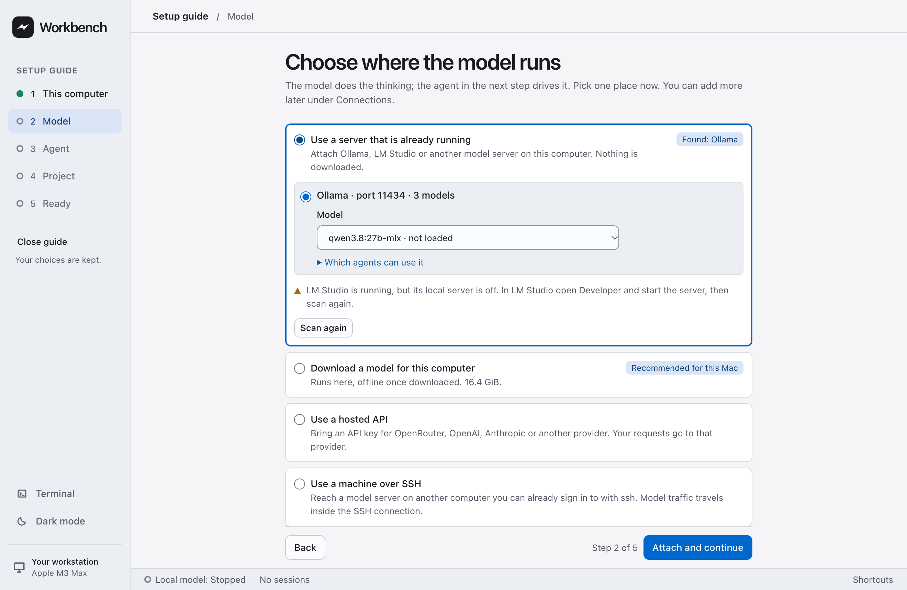
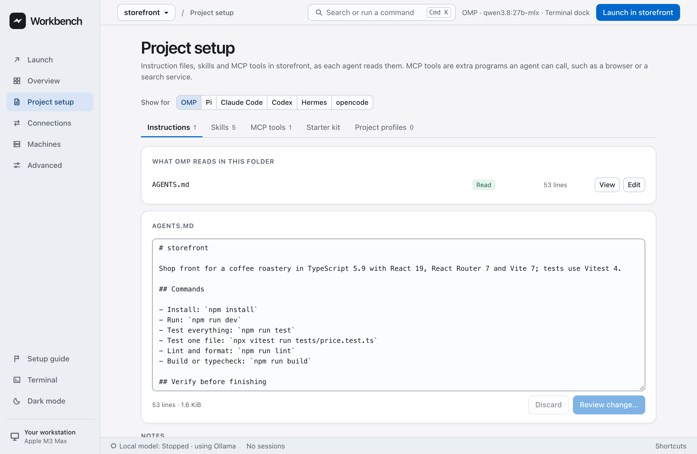

Version 0.4.0 · MIT licence · Windows x64, Linux x64, macOS arm64 (preview)
Pick a model and a coding agent for each project folder.
Agent Workbench is a free desktop app. You choose where the model runs: on this computer, on a GPU machine over SSH, in an Ollama or LM Studio server you already use, or at a hosted API. You choose the agent CLI: OMP, Pi, Claude Code, Codex, Hermes or opencode. Workbench starts the agent in your folder and remembers the setup, together with the folder's instructions, skills and MCP tools.
Install Read the getting-started guide
- No account, no telemetry, no automatic update checks.
- API keys go to your system's credential vault, not into project files.
- Before it writes instructions, skills or MCP settings into a project, Workbench lists each file for you to confirm.
macOS on Apple Silicon and Linux x64
curl -fsSL https://github.com/jamesarslan/local-agent-workbench/releases/latest/download/install.sh | sh
Windows x64, in PowerShell
irm https://github.com/jamesarslan/local-agent-workbench/releases/latest/download/install.ps1 | iex
The script checks the kit's SHA-256 and installs it for your user, without sudo or administrator rights. The kits are not signed. Read the script first, or install by hand

Get started
Install
Each kit is an archive that unpacks to one folder. It includes Python, so you do not need to install it. When Workbench starts the first time, it downloads the desktop runtime (Electron) and the Python packages and checks their SHA-256 values.
The downloads are not code-signed or notarised, so your system may warn you before it runs them. Check the SHA-256 before you start; every route below includes it.
The tested-configurations table says what was run on each system for this release and what is expected to work but was not run.
Linux x64
Status for 0.4.0: some checks were run on Linux. The tested-configurations table says which.
With the install script
It downloads the Linux kit and SHA256SUMS, stops unless they match, installs under
your user account without sudo and adds a workbench command.
curl -fsSL https://github.com/jamesarslan/local-agent-workbench/releases/latest/download/install.sh | shTo read the script before it runs:
curl -fsSLO https://github.com/jamesarslan/local-agent-workbench/releases/latest/download/install.sh
less install.sh
sh install.sh
Then run sh ~/.local/lib/agent-workbench/setup-linux.sh once and start the app with
workbench.
By hand
Download agent-workbench-linux-x64.tar.gz and SHA256SUMS from the
0.4.0 release,
then in the folder that holds them:
sha256sum -c SHA256SUMS --ignore-missing
tar -xzf agent-workbench-linux-x64.tar.gz
sh Agent-Workbench/setup-linux.sh
setup-linux.sh lists the desktop libraries it needs and asks before it uses sudo, then
starts the app. After that, start it with sh Agent-Workbench/workbench.sh.
macOS on Apple Silicon (preview)
Status for 0.4.0: preview. The macOS checks listed in the README have not all passed. Intel Macs are not supported.
With the install script
It downloads the macOS kit and SHA256SUMS, stops unless they match, installs under
your user account without sudo and adds a workbench command. It removes the macOS
download mark (quarantine) from the files it unpacks.
curl -fsSL https://github.com/jamesarslan/local-agent-workbench/releases/latest/download/install.sh | shTo read the script before it runs:
curl -fsSLO https://github.com/jamesarslan/local-agent-workbench/releases/latest/download/install.sh
less install.sh
sh install.shBy hand
Download agent-workbench-macos-arm64.tar.gz and SHA256SUMS from the
0.4.0 release,
then in Terminal:
cd ~/Downloads
shasum -a 256 -c SHA256SUMS --ignore-missing
tar -xzf agent-workbench-macos-arm64.tar.gz
sh Agent-Workbench/"Launch Workbench.command"The launcher removes the macOS download mark (quarantine) from its own folder, so the bundled Python can start. That is why you start it from Terminal.
If macOS blocks the launcher. Double-clicking
Launch Workbench.command in Finder makes macOS refuse it, because the kit is not
notarised. Choose Done, then:
- Open System Settings, then Privacy & Security.
- Scroll to Security, find the message about
Launch Workbench.commandand choose Open Anyway. - Confirm with your password. Apple describes these steps in Open a Mac app from an unknown developer.
Starting the launcher from Terminal, as above, avoids this. macOS also asks once for permission to control Terminal when an agent opens in its own window.
Windows x64
Status for 0.4.0: not run on Windows. It is expected to work; please report what you find.
With the install script
In PowerShell. It downloads the Windows kit and SHA256SUMS, stops unless they match,
installs under %LOCALAPPDATA%\Agent Workbench without administrator rights, and adds
a workbench command and a Start menu entry.
irm https://github.com/jamesarslan/local-agent-workbench/releases/latest/download/install.ps1 | iexTo read the script before it runs:
irm https://github.com/jamesarslan/local-agent-workbench/releases/latest/download/install.ps1 -OutFile install.ps1
notepad install.ps1
powershell -ExecutionPolicy Bypass -File .\install.ps1By hand
Download agent-workbench-windows-x64.zip and SHA256SUMS from the
0.4.0 release.
In PowerShell, in the folder that holds them, print the hash and compare it with the line for that
file in SHA256SUMS, then unblock and extract the archive:
Get-FileHash -Algorithm SHA256 agent-workbench-windows-x64.zip
Unblock-File agent-workbench-windows-x64.zip
Expand-Archive agent-workbench-windows-x64.zip -DestinationPath .Then double-click Launch Workbench.cmd inside Agent-Workbench.
If Windows warns you. If the archive was extracted without
Unblock-File, Windows can show "Windows protected your PC" or a security warning
before it runs the launcher:
- Check that the file named is
Launch Workbench.cmdfrom the folder you extracted. - Choose More info and then Run anyway, or Run in the security warning.
With Smart App Control switched on, Windows may block the unsigned Python inside the kit however
it arrives. Then use agent-workbench-source.tar.gz with Python 3.12, 3.13 or 3.14
from python.org.
Architecture
How it works
Workbench does the setup and then steps aside. It is not a proxy: once the agent is running, its requests go straight to the model.
- Find or start a model. Workbench looks for model servers already listening on this computer, such as Ollama, LM Studio and llama.cpp. If there is none, it can install a pinned llama.cpp build for your GPU and suggest a model that fits your memory. A paired SSH machine or a hosted API key works too.
- Check which API the server speaks. OMP, Pi and opencode need OpenAI Chat Completions, Codex needs OpenAI Responses and Claude Code needs Anthropic Messages. Workbench tests the server and offers the agents that will work with it.
- Prepare the folder. Workbench shows which instruction files, skills and MCP servers the agent will read in this folder. If you add a starter kit, you see every file before it is written, and existing files are left alone.
- Start the agent. The CLI opens in a terminal in your project folder with its key in the process environment. The choice is remembered for that folder.
- Data the agent sends and receives
- Setup that Workbench does before the session
Features
What it does
One window for the model, the agent and the folder, and a command line for the same jobs.





-
Guided setup
Five steps from a fresh install to a running agent: this computer, model, agent, project, ready. You can skip it and open it again later.
-
Attach what already runs
Finds Ollama, LM Studio, llama.cpp, vLLM, Jan and other OpenAI-compatible servers on this computer, reads the loaded context size where the server reports it, and saves your pick as a named connection. It never scans your network.
-
A GPU machine over plain SSH
Pair a machine with your normal SSH login. Workbench finds model servers running on it, or sets up a pinned llama.cpp build on a Linux machine, and forwards one port through SSH. No other port has to be open.
-
Settings that stay with the folder
The model, agent, tools and kit you last used are restored when you pick the folder again. A named profile in
.agent-workbench/profiles.jsoncan travel with the project, without keys or machine paths. -
Project setup per agent
See which instruction files, skills and MCP servers each agent will read in this folder, including the files that shadow each other. Built-in tools such as web search go to every agent that accepts MCP servers at launch.
-
Sessions at a glance
Running terminals, agent windows, remote tmux sessions, the local model and SSH tunnels in one list, plus recent sessions from each agent's own history with a way to resume them.
-
Doctor
One page, or one command, checks Python, the data folder, the credential vault, the engine, the GPU driver, the agent CLIs and ports. Each result comes with one sentence that says what to fix.
-
Measure your own setup
Run a short benchmark against the model you are serving, and see how many prompt tokens your enabled MCP tools add, before you start a long session.
Comparison
When another tool is the better choice
Workbench does one job: one project folder, one model source and one agent, set up correctly and remembered. Other tools do neighbouring jobs better.
Use something else when
-
You want Claude Code, Codex or opencode on a model that Ollama already serves, and nothing more:
ollama launchdoes that in one command, with no extra app. - You want to switch providers and sync MCP servers and skills across many agent tools for your whole machine: use cc-switch. Workbench works per project folder and writes the agents' own files rather than a format of its own.
- You want several agents working in parallel on one repository, with worktrees and diff review: use a tool built for that, such as Emdash or T3 Code. Workbench has neither.
- You want a polished app for chatting with local models: LM Studio or Jan. Workbench recognises both as model sources.
Workbench fits when you want to
- keep a different model and agent for each project folder;
- run the model on another machine and reach it over SSH, with no other open port;
- use the same agents with a local engine, an attached server or a hosted key;
- see what an agent will read from a folder before it starts.
Privacy
What leaves your computer
Agent Workbench has no telemetry, no analytics, no crash reporting, no automatic update check and no account. It contacts other computers for these things:
- Installing or updating: GitHub for the kit, Electron and llama.cpp, and PyPI for Python packages.
- Downloading a model: Hugging Face.
- Using a hosted model: the provider you chose receives what the agent sends, which can include file contents and images.
- Model details for hosted sources: OpenRouter's public model list, fetched without a key, to learn which models accept images and how large their context is.
- Web tools you switch on: search engines receive your queries, and the page crawler visits the pages you ask for.
- Installing an agent CLI or starting a kit's MCP server: that tool's own publisher and package registry.
Keys
Hosted API keys are stored in your system's credential vault, or kept in memory until you close Workbench when no vault is available. Workbench hands a key to the agent in its process environment, not on the command line and not in a project file.
The agents themselves
The agent CLIs are separate programs with their own data handling and telemetry settings. Check those if it matters to you.
Templates
Starter kits
A kit is a starting point for one kind of project: an AGENTS.md template, five skills and a
few optional MCP servers (the Blank kit has only the AGENTS.md). Workbench suggests a kit from the files in your folder and shows every file it
would create. Nothing is written until you confirm, and files you already have are left alone.
-
General software
Run the real checks after every change, debug one step at a time and keep Git history clean.
-
Web front end
Run the dev server, check the page in a real browser and keep components consistent.
-
Python and data
Work inside the project's environment, treat source data as read-only and keep results reproducible.
-
3D scenes and assets
Inspect before changing, script small repeatable steps and export with checked scale and axes.
-
Research and writing
Find and cite real sources, draft in passes and check every claim.
-
DevOps and infrastructure
Plan and read before anything changes, keep secrets out of output and never apply unasked.
-
Game development
Follow the engine's layout, leave serialised assets to the editor and test from the command line.
-
Blank
A short
AGENTS.mdwith the headings every agent reads. No skills and no tools.
Kit text is written for Agent Workbench under the MIT licence. Third-party MCP servers are not bundled: a local one is fetched from its package registry the first time an agent starts it, and a hosted one runs at its publisher's address. The kit preview names the publisher and the licence. The kit MCP servers are listed from their package registries; none was started for this release. Kit contents in detail
FAQ
Questions
What does it cost, and what are you selling?
Nothing. Agent Workbench is free and MIT-licensed. There is no account, no paid tier, no sponsor placement and no resold API access. If you use a hosted model, you pay that provider directly with your own key.
I already use Ollama or LM Studio. What does this add?
If Claude Code, Codex or opencode on one Ollama model is all you need, ollama launch is
simpler and you should use it. Workbench attaches to the server you already run and adds a setup per folder: which agent,
which instructions, skills and MCP tools, and a test that the server speaks the API that agent needs.
It can also point the same agents at a GPU machine over SSH or at a hosted key.
Do I need a GPU?
No. You can use a hosted API or a model server on another machine. For local models, Workbench installs the llama.cpp build that matches your hardware (CUDA for NVIDIA, Vulkan for AMD and Intel, Metal on Apple Silicon, CPU otherwise) and suggests a model that fits your memory. Without a GPU it uses the CPU build, which is much slower.
Which agents can it start, and with which models?
OMP, Pi, Claude Code, Codex, Hermes and opencode. Each needs a server that speaks its API: OMP, Pi and opencode use OpenAI Chat Completions, Codex uses OpenAI Responses and Claude Code uses Anthropic Messages. Workbench tests the server, switches off the agents that would not work and says why. Hermes starts with its own account sign-in. For 0.4.0, OMP, opencode, Codex and Claude Code each completed a small file-writing task against a model Workbench served on a Mac; Pi and Hermes were not run.
The download is not signed. How do I know it is the real one?
The 0.4.0 kits are not code-signed or notarised; this is a one-person project without signing
certificates. Every release lists SHA-256 checksums in SHA256SUMS, and the install steps
check them. A checksum shows that the download is intact, not who made it. The install scripts and
launchers are plain shell, PowerShell and batch scripts that you can read before you run them, and you
can build the kit from the source yourself.
What does "preview" mean for macOS?
Workbench is built for Apple Silicon and uses llama.cpp with Metal. On a Mac, the engine, the local model and four agents were run from the command line, but the macOS checks listed in the README have not all passed for this release. Strata and vLLM do not run on macOS, and Intel Macs are not supported. Expect rough edges and please report them.
Where do my keys and data live?
Hosted API keys are in the system credential vault. Settings, logs, downloaded models and the local server's key are in Workbench's data folder, and a few files are written where the agent CLIs expect them. The security and data guide lists each location and how to remove it.
Why Electron?
One interface for three systems, and a real terminal inside the window. The page that draws the interface runs sandboxed, and its content policy blocks network requests and remote code. There is also a command line for starting agents and for the doctor checks.
Where are the benchmark numbers?
Not on this page. Speed and quality depend on your hardware, the model file and the settings, so a headline number would mislead. MEASUREMENTS.md has what was measured, on which machine, with the result files and the limits of each run. Workbench can run the same short benchmark on your own setup.
Does it run several agents in parallel or manage git worktrees?
No. It lists the sessions that are running and can resume recent ones, but it does not create worktrees, review diffs or coordinate agents.
How do I remove it?
Run the install script again with --uninstall (-Uninstall on Windows). It
removes the app and the workbench command and keeps your data folder. A kit you unpacked
by hand is removed by deleting its folder, which also deletes its data in .local. Keys in
the credential vault stay until you delete them. The
troubleshooting guide
lists every location, including what Workbench created for the agent CLIs.
Something does not work. Where do I start?
Open Doctor in the app, or run workbench doctor in a terminal. Each check gives one
sentence that says what to fix, and the
troubleshooting guide
has a section for each check.